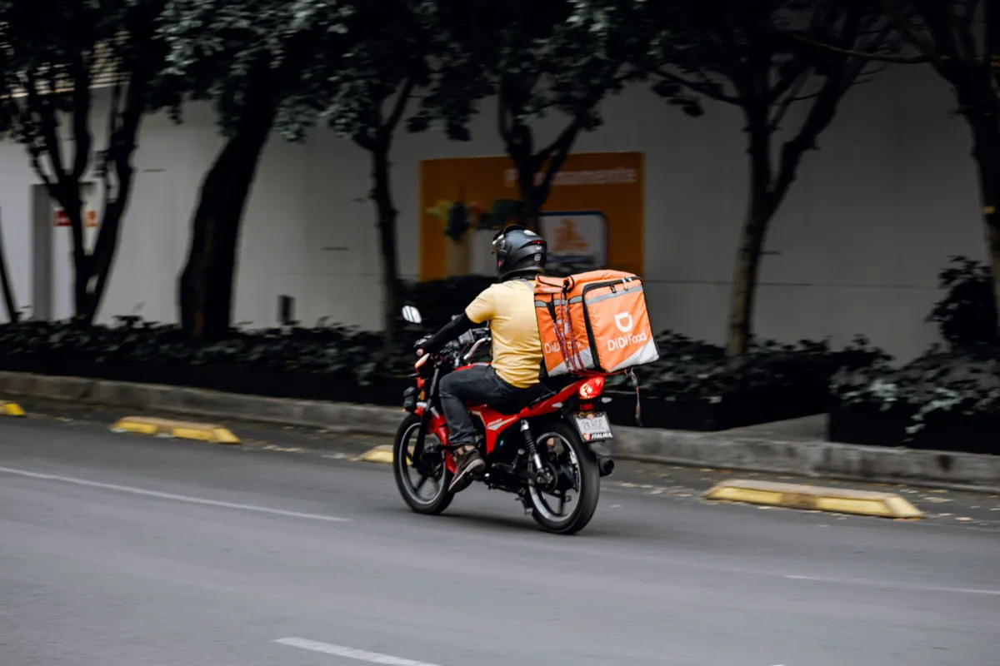

Como sair do iFood e vender direto sem perder seus clientes

A comissão do iFood pode comer de 12% a mais de 30% de cada pedido. Para muita hamburgueria, é a diferença entre lucro e prejuízo. A boa notícia: dá para sair do iFood e vender direto sem perder os clientes que você já conquistou.
Por que a comissão dói tanto
Além da porcentagem por pedido, você não tem acesso ao contato dos seus próprios clientes. Ou seja: você paga para vender e ainda fica refém da plataforma para vender de novo.
O passo a passo para migrar com segurança
- Monte seu cardápio digital próprio. Veja como criar um cardápio digital para hamburgueria.
- Migre os clientes aos poucos. No cupom de cada pedido, coloque um QR Code com desconto para o próximo pedido feito direto com você.
- Use o WhatsApp. Avise sua base que agora dá para pedir direto, mais barato e com brinde.
- Mantenha o iFood ligado no começo. Vá reduzindo a dependência conforme a base própria cresce.
O segredo: a base de clientes é sua
Com o Menuzia, cada cliente que pede entra na sua lista pra sempre. Você dispara campanhas no WhatsApp quando quiser — promoção de terça, lançamento, reativação de quem sumiu — sem pagar comissão e sem pedir permissão pra ninguém. Entenda melhor em como fazer campanha de WhatsApp para delivery.
Quanto você economiza saindo do iFood
Uma hamburgueria que fatura R$30 mil/mês pagando 20% de comissão joga fora R$6.000 por mês. Com um cardápio próprio de R$67/mês fixo, essa conta praticamente desaparece. O dinheiro que era comissão volta pro seu caixa.
Pare de pagar comissão por pedido
Tenha seu cardápio digital próprio por R$67/mês fixo. Nós configuramos pra você e damos todo o suporte técnico.
Criar Meu Cardápio Agora →